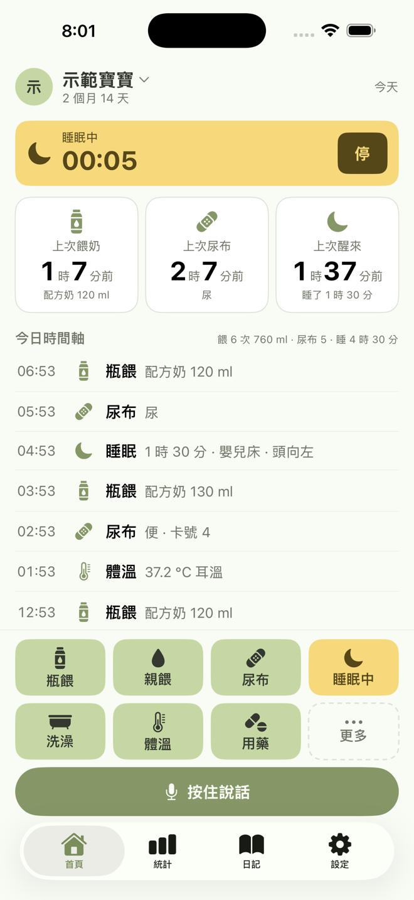
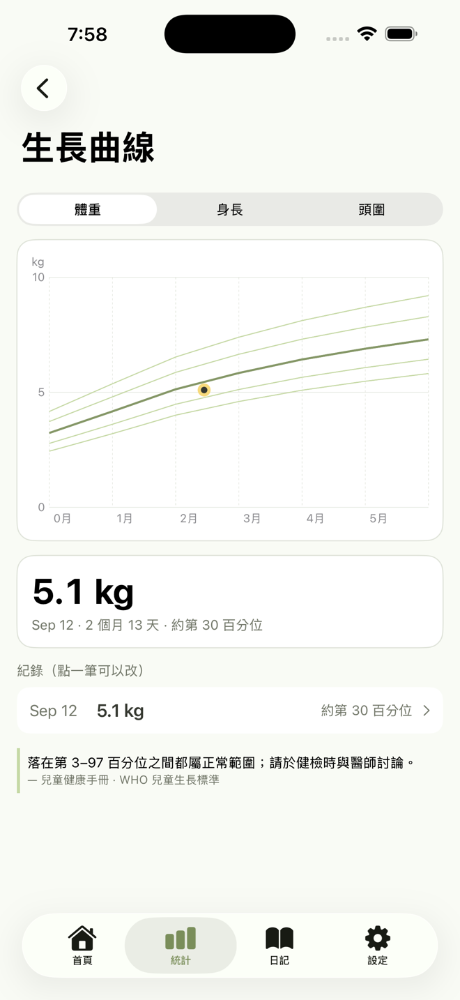
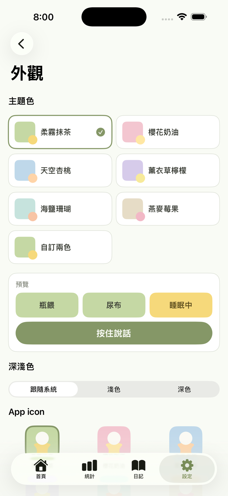

開始用
三種進入方式，選一個就好。
1. 建立寶寶
填名字、生日、性別（生長曲線要用），早產寶寶可填預產期，之後以矯正月齡計算。然後選你是誰（媽媽／爸爸／阿嬤……），共記時會標示是誰記的。不需要帳號。
2. 我有邀請碼
另一半已經在用？請對方到「設定 › 照顧者與邀請」產生 6 碼邀請碼，你在這裡輸入，用 Apple 登入就加入同一個寶寶，紀錄即時同步。
3. 從備份還原
換手機的時候用。舊手機「設定 › 匯出與備份」匯出 .maobao 檔，新手機在這裡選檔案還原，照片與錄音都會回來。
首頁：一鍵記錄
畫面下方的大按鈕在拇指範圍內，單手就能記。
點一下
開快速表單，時間預設「現在」（也可選 5／15／30 分鐘前），欄位都預填上次的值，按 存 就好。存完 5 秒內可以 撤銷。
長按 0.5 秒
- 瓶餵、尿布、洗澡：直接「跟上次一樣」記一筆，連表單都不用開。
- 親餵、睡眠：直接開始計時。
- 活動類按鈕（臍帶清潔、刷牙、換藥……）：直接記一筆。
更多
第 8 格「更多」放不常用的：副食品、成長、疫苗、就醫、備註、活動。
狀態卡與時間軸
上方三張卡永遠顯示上次餵奶、上次尿布、上次醒來距今多久；下面是今天的時間軸，點任一筆可以改時間、內容、加照片，或刪到垃圾桶（可救回）。
各種記錄怎麼填
| 類型 | 會問你 | 小撇步 |
|---|---|---|
| 瓶餵 | 量（ml／oz）、內容物（配方奶／擠出母乳／混合） | 長按＝跟上次一樣的量 |
| 親餵 | 左右側計時，可換側；或直接填分鐘 | 鎖定畫面就能換側、停 |
| 尿布 | 尿／便／兩者，便的顏色卡號（對照兒童健康手冊）與形狀 | 便便後會觸發擦藥提醒（見下） |
| 睡眠 | 計時或填起訖；嬰兒床／同床／推車、仰睡／側睡、頭向 | 頭向會建議左右輪流 |
| 洗澡與活動 | 洗澡、臍帶清潔、刷牙、按摩、散步、趴著玩、曬太陽、換藥或自訂 | 常用的可以各自放一顆按鈕 |
| 體溫 | 度數、量測部位 | 38 °C 以上標示發燒；存完可接著記用藥 |
| 用藥 | 藥名、劑量、途徑、醫囑間隔（4／6／8／12 小時、一天一次或自訂）、時機（便便後／洗澡後／飯後／飯前） | 同一種藥會沿用上次設定 |
| 成長 | 體重（打公克也可以，自動換 kg）、身長、頭圍 | 畫在 WHO 生長曲線上 |
| 疫苗、就醫 | 依台灣時程快選，劑次、日期 | 從時程頁點一下就預填 |
| 備註 | 文字、照片（最多 4 張）、標記為里程碑 | 里程碑進日記 |
按住說話
按住底部的麥克風說一句話，放開就出現確認卡。
例如：「剛剛喝了一百二，換尿布有便便」→ 解析成「瓶餵 120 ml」＋「尿布 便」兩張卡，可以改數字、刪掉其中一筆，按「存 N 筆」。聽不出結構就「只存成備註」。
辨識全程在你的手機上完成（Apple 裝置端語音辨識），錄音與逐字稿掛在紀錄上，不會傳給任何第三方。第一次用會提示下載一次語音模型。
計時中：鎖定畫面與 Widget

親餵或睡眠開始計時後，首頁上方出現鵝黃計時條，鎖定畫面與 Dynamic Island 也會顯示，直接按「停」或「換側」，不用解鎖進 app。超過 12 小時（睡眠）或 60 分鐘（親餵）會問你「還在睡嗎？」。
Widget
- 小：上次餵奶距今＋一鍵「瓶餵 跟上次一樣」。
- 中：今天小計＋瓶餵／尿布／開始睡眠三鍵。
- 鎖定畫面：圓形（上次餵奶）、矩形（上次尿布）。
加法：主畫面長按 → 編輯 → 加入小工具 → 搜尋 Maobao。
統計與生長曲線
今日摘要四格（餵奶次數與量、尿布、睡眠、最高體溫），7 天／30 天圖表：餵奶量與次數、睡眠、尿布、體溫（38 °C 有虛線）、頭向左右分布。
生長曲線
體重、身長、頭圍分別畫在 WHO 0–24 個月的 3／15／50／85／97 百分位曲線上，最新一點鵝黃圈，寫「約第 N 百分位」。只呈現、不判定；落在第 3–97 百分位之間都屬正常範圍，請於健檢時與醫師討論。點圖上的點或下方列表可以改那一筆。早產寶寶用矯正月齡。

提醒
通知都沒有驚嘆號。在「設定 › 提醒」開關。
用藥
記用藥時填「醫囑間隔」，時間到通知「可以再給 X 了」，通知上按「記好了」就再記一筆並排下一次。
擦藥膏、換人工皮這種「便便後」「洗澡後」才擦的，把時機勾起來：記了便便或洗澡就提醒，一天一次的話間隔沒到不吵你。飯前的藥會跟「下次餵奶」提醒一起送。
下次餵奶
開啟後依月齡建議間隔（新生兒 3 小時、之後 4 小時），記了一筆餵奶自動重算。通知上可直接「記瓶餵（跟上次一樣）」。
疫苗與健檢
依疾管署時程與兒童健康手冊 7+2 健檢，前 7 天與當天早上 9 點提醒。「設定 › 疫苗與健檢時程」看全部，點一項直接預填記錄。
自訂提醒
換藥、臍帶清潔、擦乳液、維他命 D……每 N 小時或每天固定時間（最多 4 個）。通知上「記好了」記成一筆活動，每 N 小時模式從那一刻重新起算。
日記、回診摘要、匯出
日記
照片牆按月齡分組（「芼寶 2 個月」），里程碑（第一次笑、翻身、長牙……）有鵝黃星號。任何紀錄的編輯頁都能加照片。
回診摘要
「設定 › 回診摘要」選 7 天／30 天／自訂，依兒童健康手冊「家長紀錄事項」列出：一天餵幾次、總量、濕尿布片數、便的卡號與形狀、睡眠總量與夜醒、最高體溫與用藥、成長與百分位、疫苗狀態，可打「想問醫師的問題」，一鍵產生 PDF 帶去給醫師。
匯出與備份
CSV（Excel 可開）、.maobao 備份檔（含照片錄音）。沒有帳號的話 30 天沒備份會提醒你。
設定：做成你喜歡的樣子

- 主題色與 icon：柔霧抹茶、櫻花奶油、天空杏桃、薰衣草檸檬、海鹽珊瑚、燕麥莓果，或自訂兩色；跟隨系統／淺色／深色；app icon 也能換色。
- 快捷按鈕：dock 上 7 顆自己選、自己排，臍帶清潔、刷牙、換藥可以各自一顆。
- 寶寶：頭像照片（可拖曳縮放裁切）、生日、性別、早產預產期。
- 單位：ml／oz。
- 刪除：無帳號「刪除所有本機資料」；有帳號「刪除帳號與所有資料」，伺服器上你擁有的寶寶、紀錄、附件與帳號一起刪，無法復原。
常見問題
要不要帳號？不用。只有共記需要 Apple 登入。
會給醫療建議嗎？不會。Maobao 只記錄與整理你輸入的數字；用藥間隔都依你的醫囑，生長曲線只標百分位。有疑慮請諮詢醫師。
資料在哪裡？手機裡；開啟共記後該寶寶同步到我們在 Supabase（新加坡）的伺服器，不存 iCloud。詳見 隱私政策。
更多見 支援與常見問題，或寫信到 yvictor3141@gmail.com。
In English
Maobao is a baby-care log for parents, built so you never mis-tap at 3 a.m. Big one-tap buttons for bottle, nursing timer, diapers, sleep timer, bath, temperature and medication; long-press to repeat the last entry. Hold to talk and one sentence logs two entries, with speech recognition running entirely on your phone.
Stats and WHO growth curves shown without judgement; reminders for medication (including "after poop" / "after bath" ointments), next feed, vaccines and check-ups, and custom reminders; lock-screen Live Activity and widgets; share a baby with a partner by invite code with instant sync and optional push notifications; photo wall, one-page visit summary PDF, CSV and backup export. No account needed until you share. Six color themes and matching app icons.
The app interface is currently in Traditional Chinese; an English interface is in progress. Privacy policy · Support